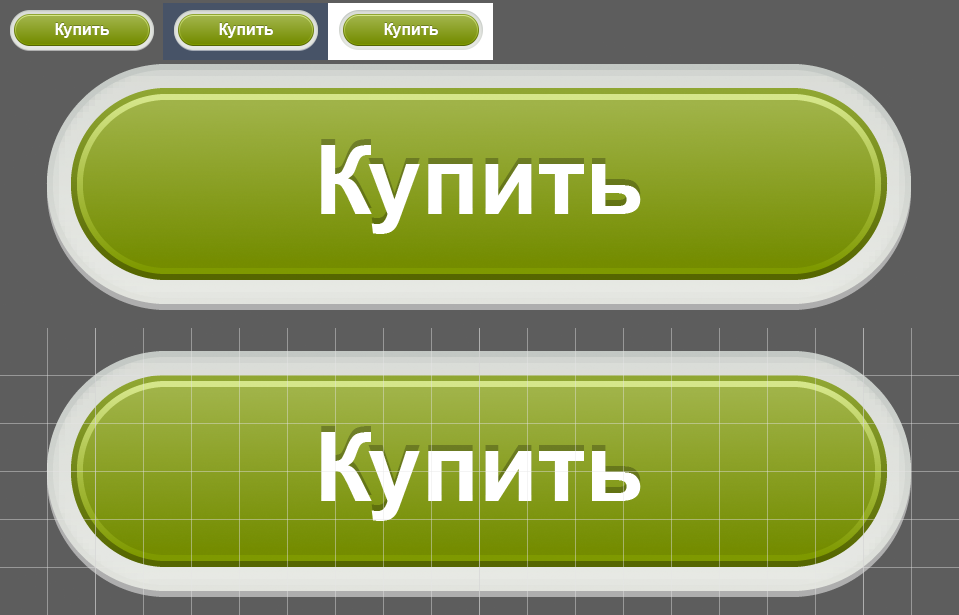

Сверстайте кнопку, изображённую на рисунке ниже.
Стили должны применяться только к элементам, у которых есть класс b-button. Длина изображения должна зависеть от длины текста (никаких фиксированных размеров). При наведении на кнопку ободок с плавной анимацией становится темнее. При обратном действии мышки цвет ободка с той же анимацией возвращается в первоначальное состояние.
На изображении в верхнем ряду указан реальный размер кнопки и то, как она выглядит на разных фонах. Ниже увеличенный размер. Размер ячейки сетки на последнем изображении — 8px.
Стиль шрифта не важен. Постарайтесь реализовать без использования javascript и изображений. Результат должен находиться в подключенном файле b-button.css
